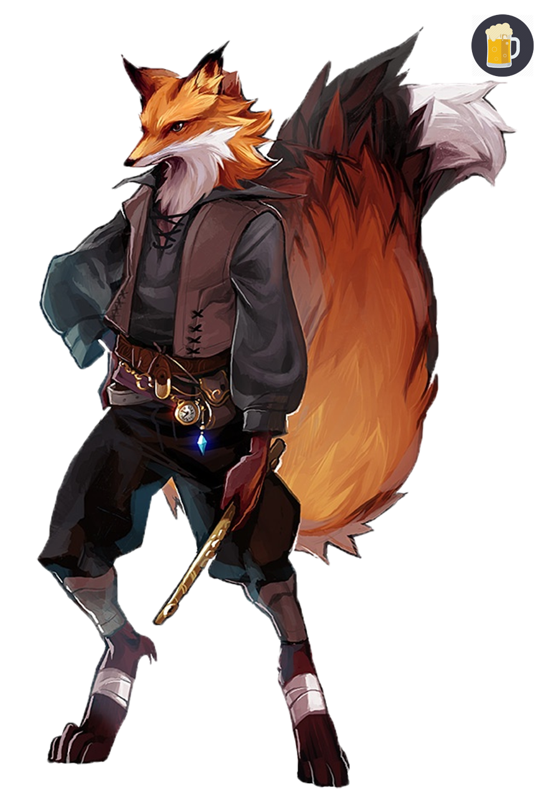

Kitsune Guide

HOMEBREW
This race is homebrew, meaning that this is unofficial work that won't be allowed in some adventures.
Converse with your DM before choosing this race.
TALL AND FURRY
Kitsunes live in their remote villages
where most people wouldn't even care to look.
Kitsune are generally quite tall, Ranging from 6 to 7 feet tall.
But they weigh almost the same as most humans.
Kitsune have 4 main subraces: Red, Grey, Dessert and Arctic.
These subrace can have children with eachother making crossbreeds.
Crossbreeds are common in most villages but some villages
only allow pure breeds to live in it.
Crossbreeds can be anything from a patch of grey in dessert fur to being a perfect split between red and arctic fur.
Some Kitsunes also dye their fur in order to express themselves more.
the colors can be anything from a realistic grey to absurd colors like lime green or intense yellow.
A few important ranks of a village could also be spotted easier this way, for example
Elders usually paint their fur a light grey with tiger-like purple stripes.
Tails are a sign of a Kitsune's magic.
A Kitsune usually has one tail but, depending on their connection to magic, a Kitsune can have up to nine tails.
The number of tails is not a fixed number.
A Kitsune can gain tails by strengthening their connection to magic, the same way
the sagging of one's connection to magic can result in loss of tails.
The amount of tails usually establish the ranks of a village.
One tail is most of the time a sign for the common people, while 7 tails are usually the councillors and 8 to 9 tails are the Elders.
Kitsune Traits
Your Kitsune characters has some unique features because of their vulpine history.
Ability Score Increase: Your Dexterity score increases by 1, and your Wisdom score increases by 2.
Making Kitsunes a good choice for Druids
or Monks
Age: Kitsunes mature at the same rate as humans but live a few years longer.
Aligment: Kitsunes know on a young age that their species is dying out, therefor they know not to harm other kitsunes. Because most Kitsunes don’t meet other races, they don’t harm anyone making them Lawful or Neutral.
Size: Kitsunes are bigger than most humans. Ranging from 6 to 7 feet tall. Your size is medium.
Speed: Your base walking speed is 40 feet.
Darkvision: Generations of hunting in the woods at night have given Kitsunes good sight in the dark. You can see in dim light within 60 feet of you as if it were bright
light, and in darkness as if it were dim light. You can't discern color in darkness, only shades of gray.
Poison Damage Resistance: As creatures of the forest, Kitsunes have been exposed to many forms of poison. You have advantage on saving throws against poison, and you have resistance against poison damage.
Vulpine maw: You have the ability to bite some one with your teeth. It is a finesse melee weapon making the to hit strength/dexterity + Proficiency bonus. It deals 1d4 + strength piercing damage.
Smelly smells: Your nose is way better then most, giving you advantage on Wisdom (Perception) checks that rely on smell.
Languages: You can speak, read, and write common and you can speak Alepoú. Alepoú is the unique language of the kitsunes mostly consisting of barks and howls. Becaus this language is very primal, it is impossible to write down. Therefor the main language
nowadays is common. Alepoú is still used in some occasions, like hunting or conversing in secret while other races are present.